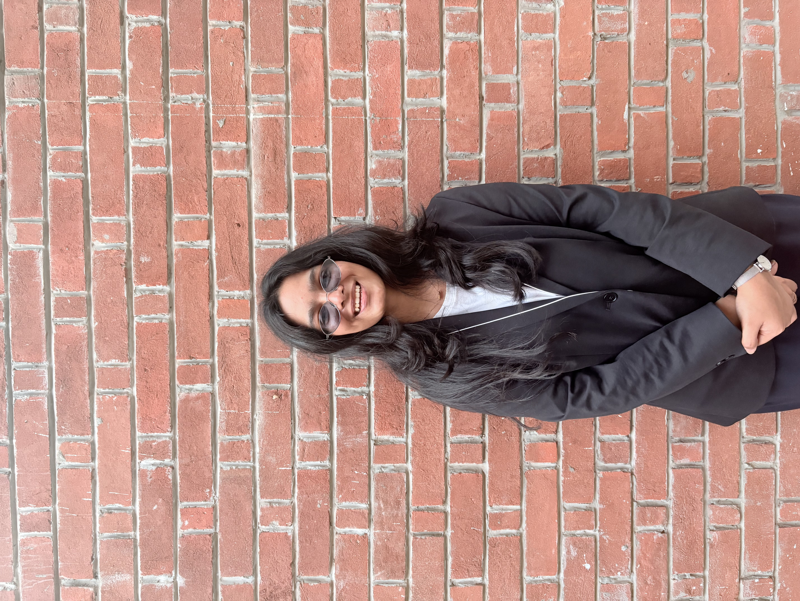
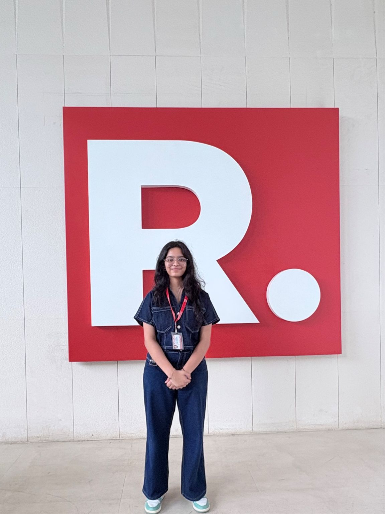
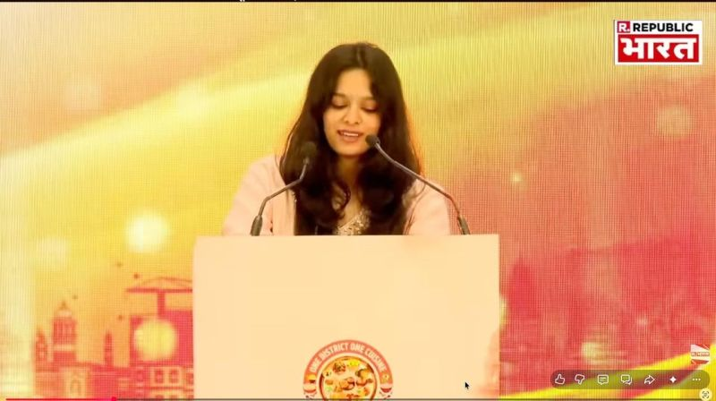
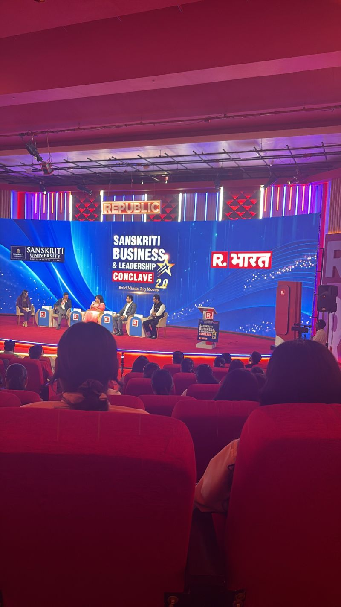
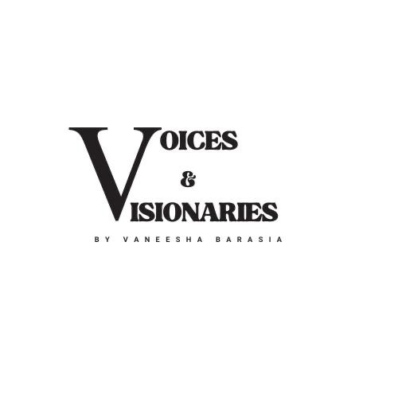

MEDIA & PRODUCTION
Republic Media Network
TV Ad Sales Intern
Gained exposure to production, input, editorial workflows and media operations. Also contributed to the coordination of the Republic Annual Summit 2026.
BUSINESS • ENTREPRENEURSHIP • FINANCE
Hi, I'm Vaneesha. A business student, curious creator and aspiring entrepreneur interested in understanding how ideas turn into meaningful ventures.

A LITTLE ABOUT ME
I enjoy being where ideas, business and people meet.
My journey so far has taken me through entrepreneurship, marketing, media, content creation and event management. Each experience has taught me something different about how organisations work, how people connect and how opportunities are built.
Currently pursuing business education at IIM Bangalore and NMIMS, I am particularly interested in finance, business strategy, brand building and entrepreneurship. I like asking questions, taking initiative and learning beyond the classroom.
THE ACADEMIC SIDE
BBA in Digital Business and Entrepreneurship
Bachelor of Business Administration
Class XII — 88%
Class X — 86%
WHERE I'VE BEEN
MEDIA & PRODUCTION
TV Ad Sales Intern
Gained exposure to production, input, editorial workflows and media operations. Also contributed to the coordination of the Republic Annual Summit 2026.
ENTREPRENEURSHIP
Co-founder & Director
Helped build a platform connecting young innovators with entrepreneurs, mentors and potential networks.
CONTENT & STORYTELLING
Founder & Host
Created a written interview platform featuring entrepreneurs and changemakers. Worked on research, scripting, outreach and publishing.
MARKETING
Marketing Intern
Designed 30–40 social media creatives and analysed over 100 customer feedback responses.
DIGITAL MARKETING
Social Media Intern
Contributed to digital campaigns, content calendars and social media audience engagement.
BEYOND THE CLASSROOM
Event planning, coordination & opening address
Speaker coordination, event flow & public speaking
Planning, coordination & opening address
Finance coordination, creative direction & team management
A FEW MOMENTS ALONG THE WAY
A collection of moments, milestones and experiences that have shaped my journey so far.

Learning Beyond the Desk

On stage & behind the scenes

Ideas, conversations and people

Conversations with changemakers
WHAT I BRING TO THE TABLE
IDEAS, OPPORTUNITIES & EVERYTHING IN BETWEEN.
Always open to learning, collaborating and connecting.